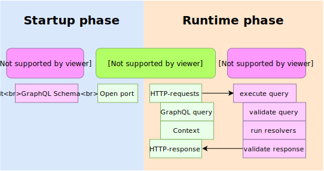

Internal IT Stand Up by ITSumma
FRONTALK #3
Introduction to GraphQL
REST API
- На каждую сущность свой эндпоит
- Типы запросов: POST GET PATCH PUT DELETE
- Строгий - жирный ответ
- Для выборки нужно мутить JSON-API
- Аргументы в гет параметрах
- Связаные данные? Разные эндпоиты(доп запросы) или жирный ответ, или еще больше эндпоитов
- Документация? - залезай в сорци и смотри
- Можно Swagger, но это просто красивый блокнот
GraphQL API
Концепция
Сервер объявляет о своих возможностях

Клиенте заявляет о своих потребностях
GraphQL — это
- не база данных
- не для передачи бинарных данных
- не только под NodeJS
- не только по HTTP
Языковые средства GraphQL
- schema definition language (SDL)
- язык запросов (query language)
GraphQL SDL
Output type
type Product {
id: Int!
title: String!
description: String!
status: Int!
categories: [ShopCategory]
tags: [ShopTag]
}
Input type
input Credentials {
login: String!
password: String!
}
Enum type
enum Role {
ROOT
ADMIN
MANAGER
CUSTOMER
}
Interface
interface NamedEntity {
name: String
}
interface ValuedEntity {
value: Int
}
type Business implements NamedEntity & ValuedEntity {
name: String
value: Int
employeeCount: Int
}
Unions
union SearchResult = Photo | Person
type Person {
name: String
}
type Photo {
height: Int
width: Int
}
type SearchQuery {
firstSearchResult: SearchResult
}
Scalars
# Default
scalar Int
scalar Float
scalar String
scalar Boolean
scalar ID
# Custom
scalar Time
scalar Url
Модификаторы типов
type SomeType {
# Массив
strings: [String]
# Non-Null
nonNullString: String!
# Комбинация модификаторов
nonNullStrings: [String!]!
}
Directives
directive @auth(roles: [Role]) on OBJECT | FIELD_DEFINITION
type SomeType1 @auth(roles: [ADMIN, MANAGER]) {
field1: String @auth(roles: [ADMIN])
field2: String
}
type SomeType2 @auth(roles: [ADMIN]) {
field1: String
field2: String
}
Root Types
type Query {
products(ids: Int): [Product]
product(id: Int!): Product
}
type Mutation {
product(input: in_Product!, id: Int): Product
}
type Subscription {
...
}
GraphQL Query Language
Query
query {
products {
id
title
description
categories {
id
title
description
}
}
}
Mutation
mutation {
product(input: {
title: "product 123"
description: "description"
}) {
id
title
description
}
}
Fragments
{
products {
...product
categories {
...category
}
}
}
fragment product on Product {
id
title
description
}
fragment category on ShopCategory {
id
title
description
}
Inline Fragment
{
products {
... on Product
categories {
... on ShopCategory
}
}
}
Multiple Query
{
products {
... on Product
categories {
... on ShopCategory
}
}
shopCategories {
... on ShopCategory
}
shopTags {
... on ShopTag
}
shopOrders {
... on ShopOrder
}
}
Alias
{
list: categories(is_parent: true) {
...category
subCategories {
...category
}
}
tree: categories(is_parent: false) {
...category
subCategories {
...category
}
}
}
fragment category on ShopCategory {
id
title
description
}
GraphQL Интроспекция
Интроспекция — это описание всех типов в GraphQL-схеме
Это схема без resolve-методов
Видно что есть, но не видно как реализовано
Нужна для: IDE, линтеров, статического анализа
Пример GraphQL IDE: GraphiQL
Нужна только на этапе разработки
GraphQL на сервере
- Описать схему данных
- Описать резолв функции
Минимуи 2 пакета

Инит и рантайм фазы
Авторизация, оптимизация, кэширование – это за пределами GraphQL
Никакой магии, просто «строгий» вызывальщик функций
Hello world schema (startup phase)
import { GraphQLSchema, GraphQLObjectType, GraphQLString } from 'graphql';
const schema = new GraphQLSchema({
query: new GraphQLObjectType({
name: 'RootQueryType',
fields: {
hello: {
type: GraphQLString,
resolve: () => 'world',
}
}
}),
// mutation: { ... },
// subscription: { ... },
});
Hello world schema (runtime phase)
import { graphql } from 'graphql';
import { schema } from './your-schema';
const query = '{ hello }';
const result = await graphql(schema, query);
// returns: { data: { hello: "world" } }
Server By Apollo
import { GraphQLSchema, GraphQLObjectType, GraphQLString } from 'graphql';
import { ApolloServer } from 'apollo-server';
const schema = new GraphQLSchema({
query: new GraphQLObjectType({
name: 'Query',
fields: {
hello: {
type: GraphQLString,
args: {
name: { type: GraphQLString, defaultValue: 'world' },
},
resolve: (source, args, context) => {
return `Hello, ${args.name} from ip ${context.req.ip}`;
},
},
},
}),
});
const server = new ApolloServer({
schema,
context: ({ req }) => ({ req }),
playground: true,
});
server
.listen({
port: 5000,
endpoint: '/',
playground: '/playground',
})
.then(({ url }) => {
console.log(`🚀 Server ready at ${url}`);
});
My server NodeJS
App.js
import express from 'express'
import graphqlHTTP from 'express-graphql'
const app = express()
...
app.use('/graphql', graphqlHTTP(req => async ({
schema,
graphiql: true,
formatError: (error) => ({
message: error.message,
path: error.path,
locations: error.locations,
stack: error.stack ? error.stack.split('\n') : [],
})
})))
...
app.listen(3000)
schema.js
import { makeExecutableSchema } from 'graphql-tools'
import { mergeTypes, mergeResolvers } from 'merge-graphql-schemas'
import { DirectiveTypedef, AuthDirective } from '../directives'
import { ProductTypeDef, ProductResolver } from './shop'
const typeDefs = mergeTypes([
DirectiveTypedef,
ProductTypeDef
])
const resolvers = mergeResolvers([
ProductResolver
])
export const schema = makeExecutableSchema({
typeDefs,
resolvers,
schemaDirectives: {
auth: AuthDirective,
}
})
product.typedef.js
export default `
type Product {
id: Int!
title: String!
subtitle: String!
offertitle: String!
description: String!
status: Int!
categories: [ShopCategory]!
tags: [ShopTag]!
}
input in_Product {
id: Int
title: String
subtitle: String
offertitle: String
description: String
status: Int
categories: [in_ShopCategory]
tags: [in_ShopTag]
}
type Query {
Products(ids: Int): [Product]
Product(id: Int!): Product
}
type Mutation {
Product(input: in_Product!, id: Int): Product
}
`
product.resolver.js
import { getCustomRepository } from 'typeorm'
import { schemaRelBySpec, schemaWhereByArgs } from '../../../utils'
import { ProductRepository } from '../'
const rp = () => getCustomRepository(ProductRepository)
const relationSpec = ['items','items.options','categories','tags']
const resolvers = {
Query: {
Products: async (_, args, context, info) => {
const relations = schemaRelBySpec(info, relationSpec)
const where = schemaWhereByArgs(args)
return await rp().find({where, relations})
},
Product: async (_, { id }, context, info) => {
const relations = schemaRelBySpec(info, relationSpec)
return await rp().findOne(id, {relations})
},
},
Mutation: {
Product: async (_, { input, id }, context, info) => {
const relations = schemaRelBySpec(info, relationSpec)
if (id > 0) {
return await rp().patch(id, input, relations)
} else {
return await rp().post(input, relations)
}
},
},
}
export default resolvers